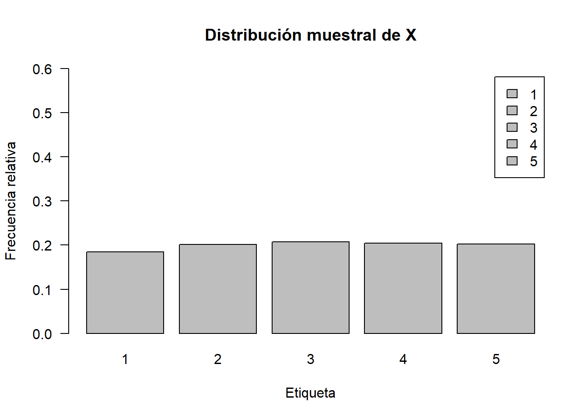
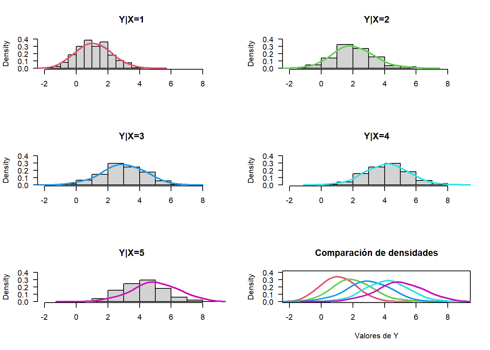
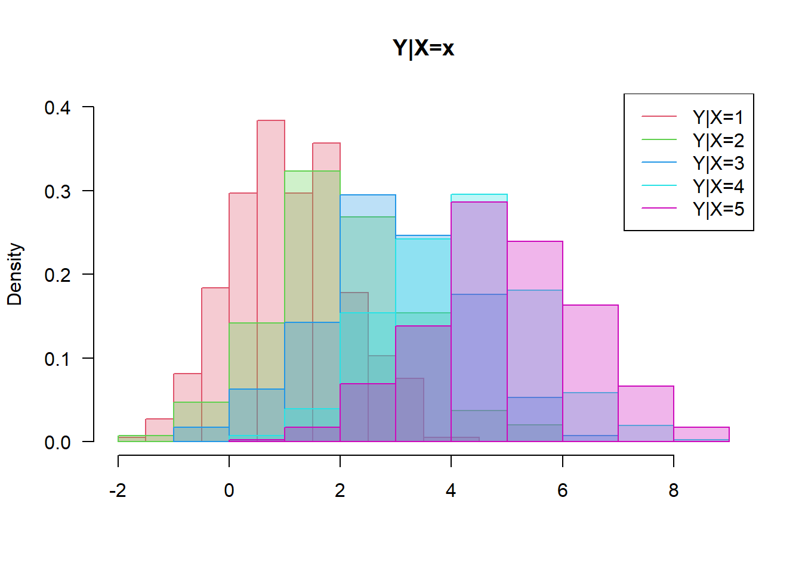
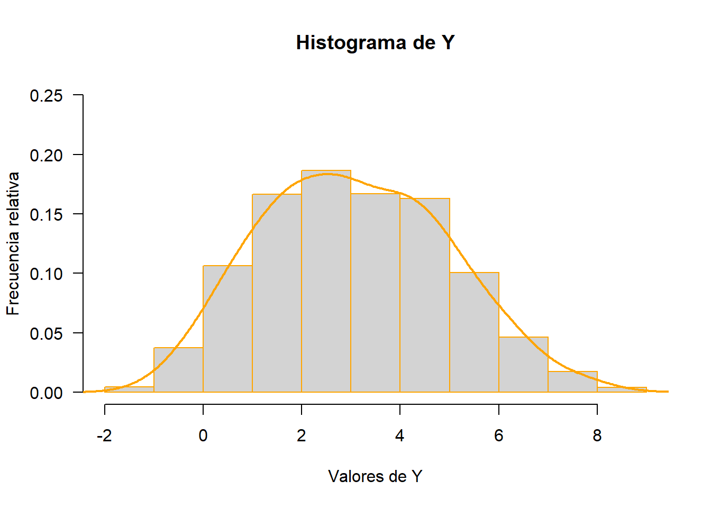
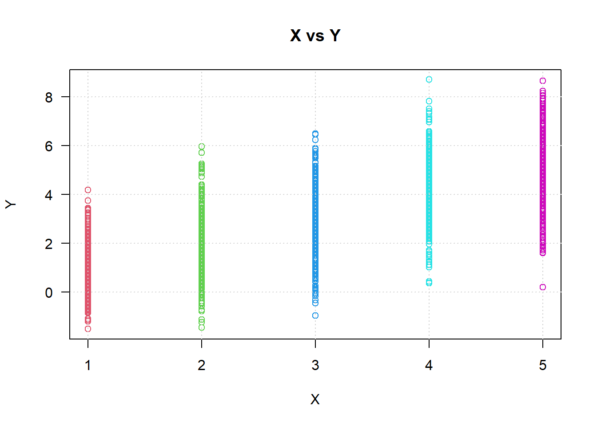
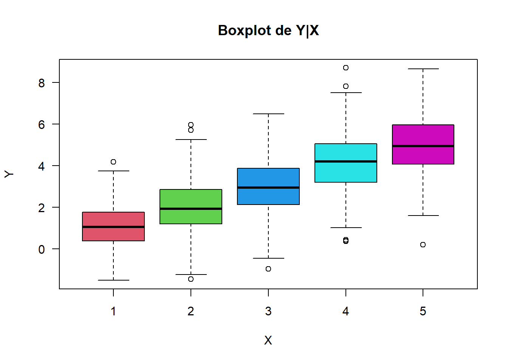
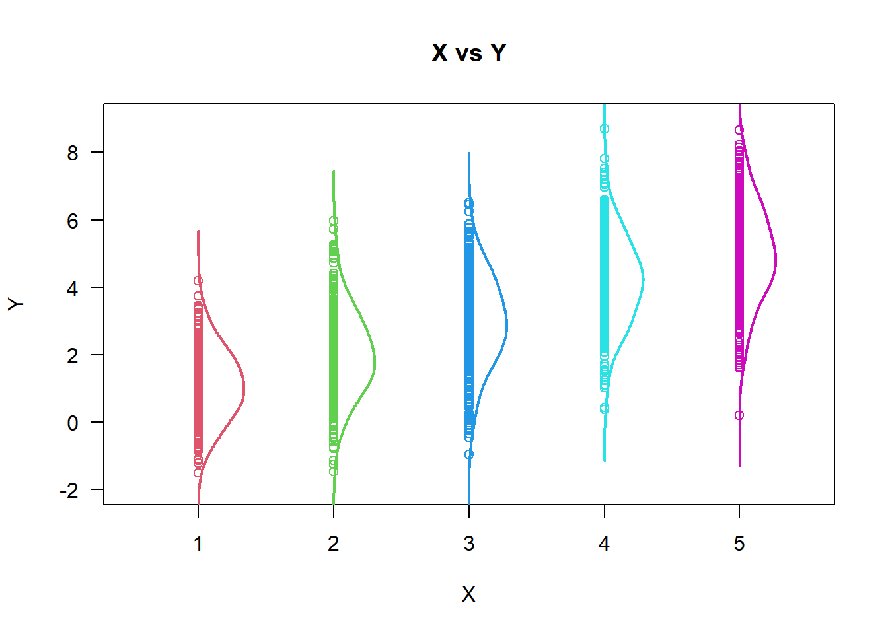
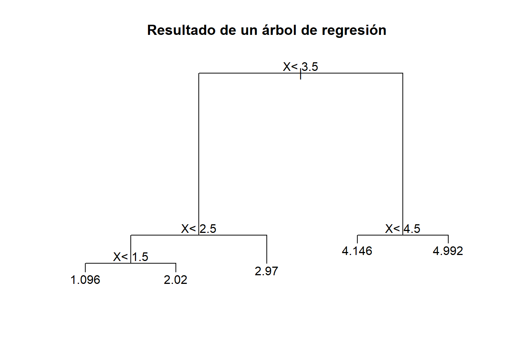

Dada una muestra \(L\left\{(X_1,Y_1),...,(X_n,Y_n)\right\}\), con \(X_i\) toma valores en \(\mathbb{R}^p\) y \(Y_i\) toma valores en \(\mathbb{R}\) y provienen de una distribución conjunta con densidad \(f_{Y,X}\left(y,x\right)\), la función \(g(\cdot)\) que minimiza \(E[(Y-g(X))^2]\) es \(E[Y|X]\). La pérdida cuadrática de \(g(\cdot)\) es \(E[V[Y|X]]\).
En este ejemplo nos enfocaremos en un caso simple:
El siguiente código simula \(X\):
set.seed(20200521) # se fija la semilla para obtener resultados reproducibles
N<-2000 # Número de simulaciones
X<-ceiling(runif(n=N,min=0,max=5))A continuación se explora la distribución muestral de \(X\) con un gráfico de barras:
X_freq_abs<-table(X) # Calcula las frecuencias absolutas
X_freq_rel<-prop.table(X_freq_abs) # Calcula las frecuencias relativas
barplot(X_freq_rel,legend.text =1:5,ylim=c(0,0.6),las=1) # Gráfico de barras de las frecuencias relativas
# barplot(c(X_freq_rel,NA),legend.text =c(1:5,NA),las=1) # Tarea: explorar qué hace esta línea de código.
title(xlab="Etiqueta",ylab="Frecuencia relativa",
main="Distribución muestral de X")
El siguiente código simula \(Y|X\):
Y<-rnorm(N,mean=X,sd=(10+X)/10)Veamos la distribución de \(Y|X\):
par(mfrow=c(3,2))
hist(Y[X==1],freq=FALSE,main = "Y|X=1",xlim=c(-2,9),ylim=c(0,0.4),las=1,xlab="")
lines(density(Y[X==1],bw=0.5),col=2,lwd=2)
hist(Y[X==2],freq=FALSE,main = "Y|X=2",xlim=c(-2,9),ylim=c(0,0.4),las=1,xlab="")
lines(density(Y[X==2],bw=0.5),col=3,lwd=2)
hist(Y[X==3],freq=FALSE,main = "Y|X=3",xlim=c(-2,9),ylim=c(0,0.4),las=1,xlab="")
lines(density(Y[X==3],bw=0.5),col=4,lwd=2)
hist(Y[X==4],freq=FALSE,main = "Y|X=4",xlim=c(-2,9),ylim=c(0,0.4),las=1,xlab="")
lines(density(Y[X==4],bw=0.5),col=5,lwd=2)
hist(Y[X==4],freq=FALSE,main = "Y|X=5",xlim=c(-2,9),ylim=c(0,0.4),las=1,xlab="")
lines(density(Y[X==5],bw=0.5),col=6,lwd=2)
plot(density(Y[X==1],bw=0.5),col=2,lwd=2,las=1,xlim=c(-2,9),ylim=c(0,0.4),
main="Comparación de densidades",xlab = "Valores de Y")
lines(density(Y[X==2],bw=0.5),col=3,lwd=2)
lines(density(Y[X==3],bw=0.5),col=4,lwd=2)
lines(density(Y[X==4],bw=0.5),col=5,lwd=2)
lines(density(Y[X==5],bw=0.5),col=6,lwd=2)
Otra forma de ver la distribución de \(Y|X\):
# Tomado de:
# https://www.r-graph-gallery.com/2-two-histograms-with-melt-colors.html
hist(Y[X==1],freq=FALSE,border=2,main = "Y|X=x",xlim=c(-2,9),ylim=c(0,0.4),las=1,xlab="",col=rgb(col2rgb(2)[1,1]/255,col2rgb(2)[2,1]/255,col2rgb(2)[3,1]/255,alpha=0.3))
hist(Y[X==2],freq=FALSE,border=3,main = "Y|X=1",xlim=c(-2,9),ylim=c(0,0.4),las=1,xlab="",col=rgb(col2rgb(3)[1,1]/255,col2rgb(3)[2,1]/255,col2rgb(3)[3,1]/255,alpha=0.3),add=TRUE)
hist(Y[X==3],freq=FALSE,border=4,main = "Y|X=1",xlim=c(-2,9),ylim=c(0,0.4),las=1,xlab="",col=rgb(col2rgb(4)[1,1]/255,col2rgb(4)[2,1]/255,col2rgb(4)[3,1]/255,alpha=0.3),add=TRUE)
hist(Y[X==4],freq=FALSE,border=5,main = "Y|X=1",xlim=c(-2,9),ylim=c(0,0.4),las=1,xlab="",col=rgb(col2rgb(5)[1,1]/255,col2rgb(5)[2,1]/255,col2rgb(5)[3,1]/255,alpha=0.3),add=TRUE)
hist(Y[X==5],freq=FALSE,border=6,main = "Y|X=1",xlim=c(-2,9),ylim=c(0,0.4),las=1,xlab="",col=rgb(col2rgb(6)[1,1]/255,col2rgb(6)[2,1]/255,col2rgb(6)[3,1]/255,alpha=0.3),add=TRUE)
legend("topright",legend=paste0("Y|X=",1:5),col=2:6,lty=1)
Veamos la distribución incondicional de \(Y\):
hist(Y,freq=FALSE,las=1,main="Histograma de Y",
xlab="Valores de Y", ylab="Frecuencia relativa",
xlim=c(-2,9),ylim=c(0,0.25),border="orange")
lines(density(Y,bw=0.5),col="orange",lwd=2)
Ahora veamos la distribución conjunta de \(X\) e \(Y\):
plot(X,Y,las=1,xlab="X",ylab="Y",main="X vs Y",col=X+1)
grid()
Otra forma de ver esta distribución es con el boxplot:
boxplot(Y~X,col=2:6,las=1,main="Boxplot de Y|X")
Otra alternativa es con las densidades estimadas. Para ello se calculan primero las densidades:
# Estas densidades se calcularon arriba, pero no se guardaron en objetos. Así que hay que volverlas a calcular. Hay que pensar siempre en guardar los cálculos en objetos para evitar los reprocesos.
d1<-density(Y[X==1],bw=0.5)
d2<-density(Y[X==2],bw=0.5)
d3<-density(Y[X==3],bw=0.5)
d4<-density(Y[X==4],bw=0.5)
d5<-density(Y[X==5],bw=0.5)Ahora se grafican los puntos y se superponen las densidades:
plot(X,Y,las=1,xlab="X",ylab="Y",main="X vs Y",col=X+1,ylim=c(-2,9),xlim=c(0.5,5.5))
lines(d1$y+1,d1$x,col=2,lwd=2)
lines(d2$y+2,d2$x,col=3,lwd=2)
lines(d3$y+3,d3$x,col=4,lwd=2)
lines(d4$y+4,d4$x,col=5,lwd=2)
lines(d5$y+5,d5$x,col=6,lwd=2)
Las medias condicionales de la variable \(Y\) para los diferentes valores de la variable \(X\) se pueden obtener así:
(Y_avg_cond<-aggregate(Y~X,FUN=mean))## X Y
## 1 1 1.095524
## 2 2 2.019659
## 3 3 2.969642
## 4 4 4.145638
## 5 5 4.991957Lo anterior representa \(\hat E[Y|X=x]\), con \(x \in {1,2,3,4,5}\)
De manera análoga se pueden calcular las desviaciones estándar condicionales:
(Y_sd_cond<-aggregate(Y~X,FUN=sd))## X Y
## 1 1 1.033238
## 2 2 1.253522
## 3 3 1.339288
## 4 4 1.337277
## 5 5 1.443761Lo anterior representa \(\hat \sigma_{Y|X=x}=\sqrt{\hat V[Y|X=x]}\).
(Y_param<-merge(Y_avg_cond,Y_sd_cond,by="X",suffixes = c("_mean","_sd")))## X Y_mean Y_sd
## 1 1 1.095524 1.033238
## 2 2 2.019659 1.253522
## 3 3 2.969642 1.339288
## 4 4 4.145638 1.337277
## 5 5 4.991957 1.443761¿Cuál es el mínimo valor de la función de costo? Este valor teóricamente es \(E[V[Y|X]]\):
(L_teo<-mean(Y_sd_cond$Y^2))## [1] 1.661069¿Cómo se acerca el modelo de regresión lineal a este valor? Primero se ajusta el modelo lineal:
modelo_lm<-lm(Y~X)Ahora veamos el error cuadrático medio del modelo lineal:
(L_lm<-mean(residuals(modelo_lm)^2))## [1] 1.672597El siguiente código entrena un árbol de regresión:
library(rpart)
modelo_rt<-rpart(Y~X)El siguiente código grafica el árbol obtenido:
plot(modelo_rt,margin=0.03, main="Resultado de un árbol de regresión")
text(modelo_rt)
¿Cuál es el valor de la pérdida cuadrática del árbol?
(L_rt<-mean(residuals(modelo_rt)^2))## [1] 1.668288El siguiente código entrena un árbol de regresión:
library(caret)
modelo_knn<-knnreg(Y~X,data=data.frame(X,Y),k=5)¿Cuál es la pérdida cuadrática de los KNN con K=5?
errores_knn<-Y-predict(modelo_knn)
(L_knn<-mean(errores_knn^2))## [1] 1.668288Se entrena un modelo que considera que la varianza de cada observación es una función de \(X\):
library(nlme)
modelo_gls<-gls(Y~X,weights=~X)¿Cuál es la pérdida cuadrática del modelo lineal con varianza variable?
(L_gls<-mean(residuals(modelo_gls)^2))## [1] 1.672705Veamos cómo se comparan las pérdidas de los modelos anteriores:
cbind(L_teo,L_lm,L_knn,L_rt,L_gls)## L_teo L_lm L_knn L_rt L_gls
## [1,] 1.661069 1.672597 1.668288 1.668288 1.672705